1.9 Görselleştirme
1.9.1 Plot fonksiyonu
plot(x, y)iki nümerik vektör girdisini kullanarak serpilme çizimini oluşturur. örnek:
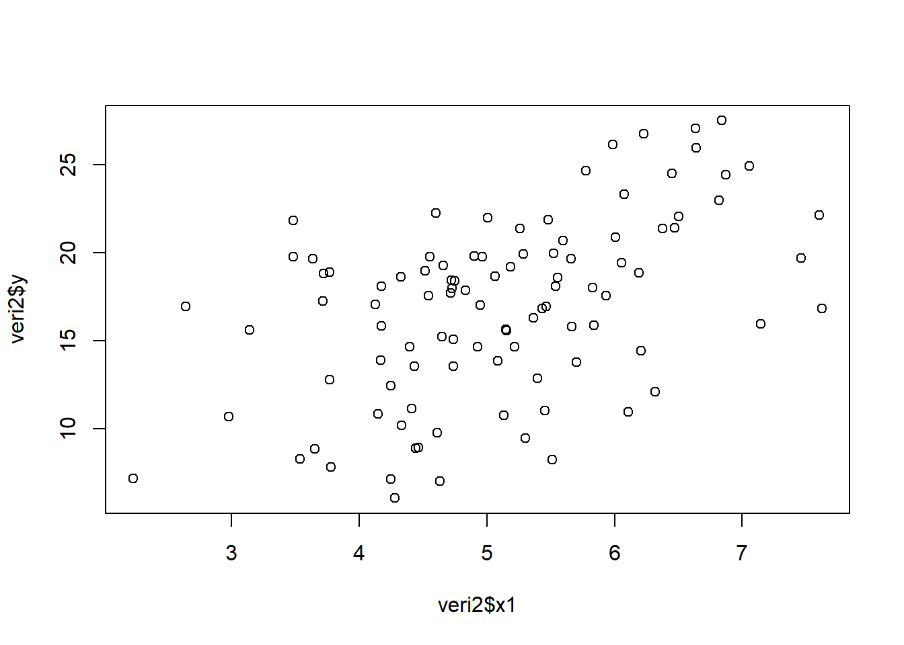
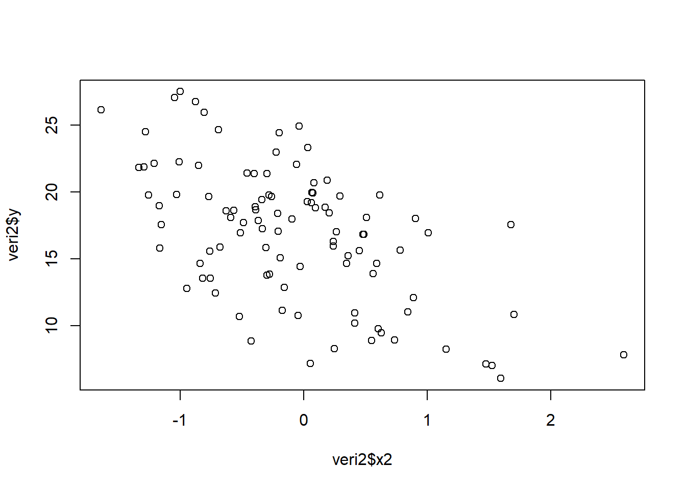
1.9.2 Eğri çizimi
Temel R’da bunun için curve() kullanılabilir. Yardım dosyasına ulaşmak için ?curve.
Örnekler:
# a linear function
curve(1+2*x, from=-2, to=2, xlab="x", ylab="" )
# add a quadratic function
curve(1+2*x-2*x^2, add = TRUE, col = "red" )
# cubic
curve(1+2*x-2*x^2+3*x^3, add = TRUE, col = "blue" )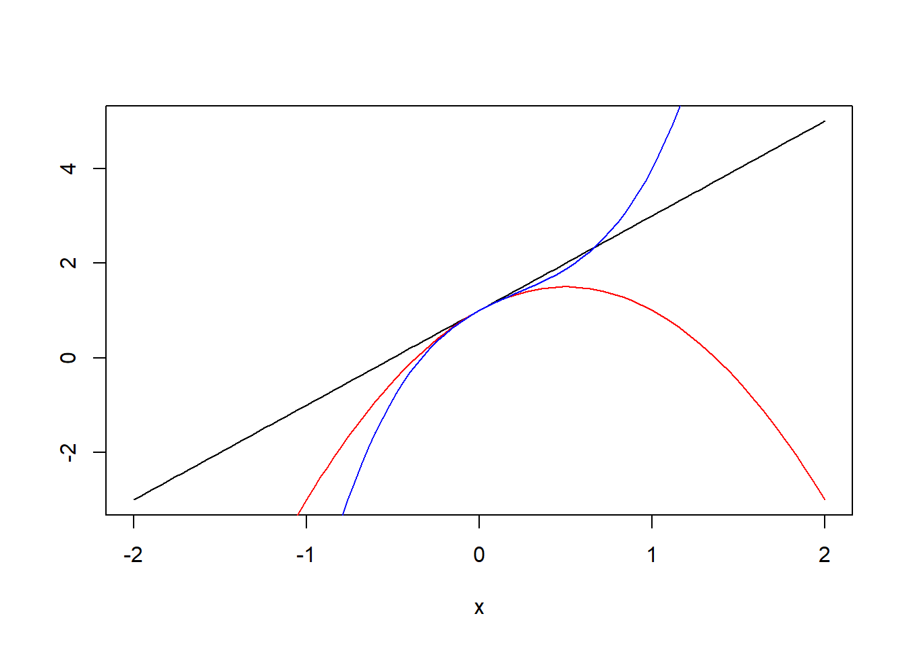
Kendi cebirsel fonksiyonlarımızı function() ile oluşturup curve() ya da plot() yardımıyla çizebiliriz:
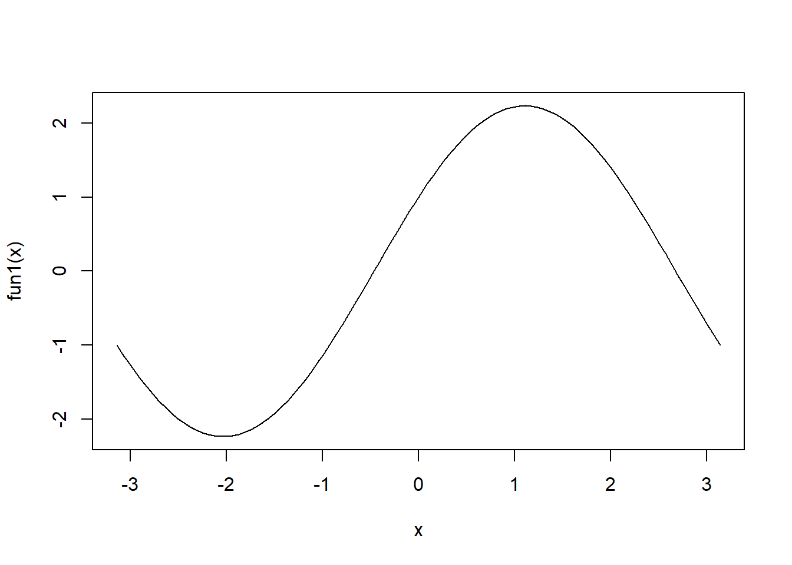
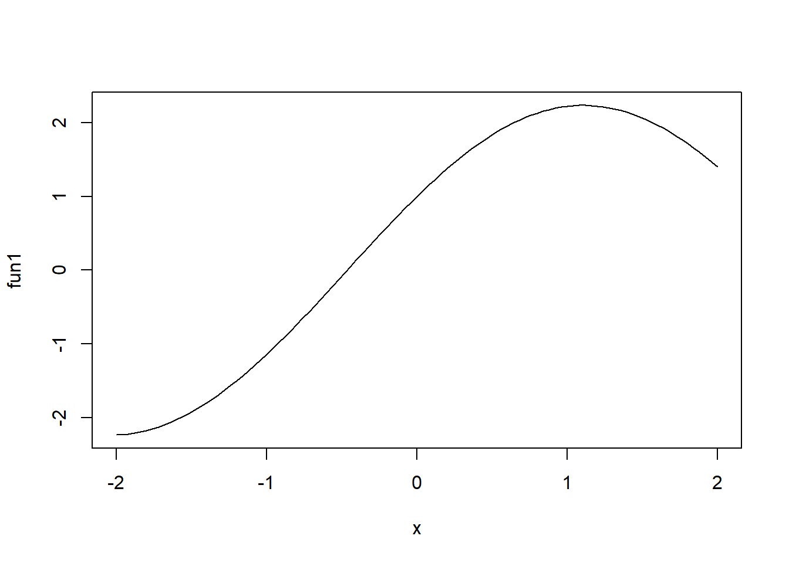
1.9.3 Histogram
- Sürekli değerler alan bir nümerik vektörün histogramı için
hist()fonksiyonu kullanılabilir:
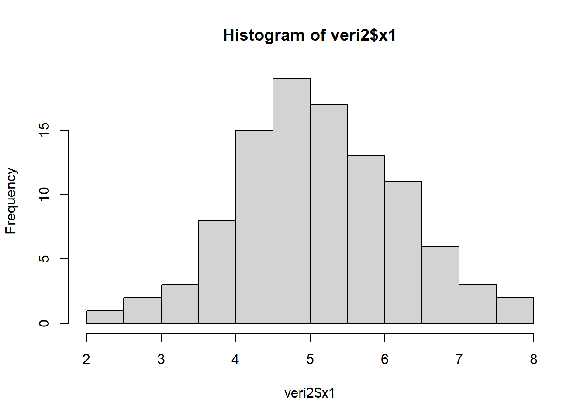
- Düzleştirilmiş histogram:
hist(veri2$x1, freq = FALSE, ylim = c(0, 0.4), xlim = c(0,10),
xlab = "x1", main = "Histogram")
lines(density(veri2$x1))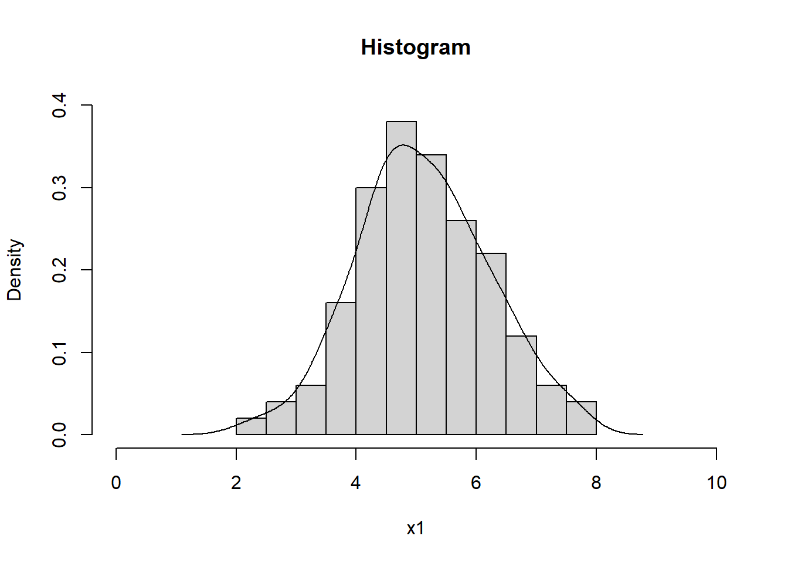
- Temel R grafiklerine bir çok alternatif mevcuttur. Bunlardan en önemlisi
ggplot2paketidir. Bu paketin özelliklerini daha sonra inceleyeceğiz.
1.9.4 Kutu çizimi
- Kutu çizimi için
boxplot()fonksiyonu kullanılabilir:
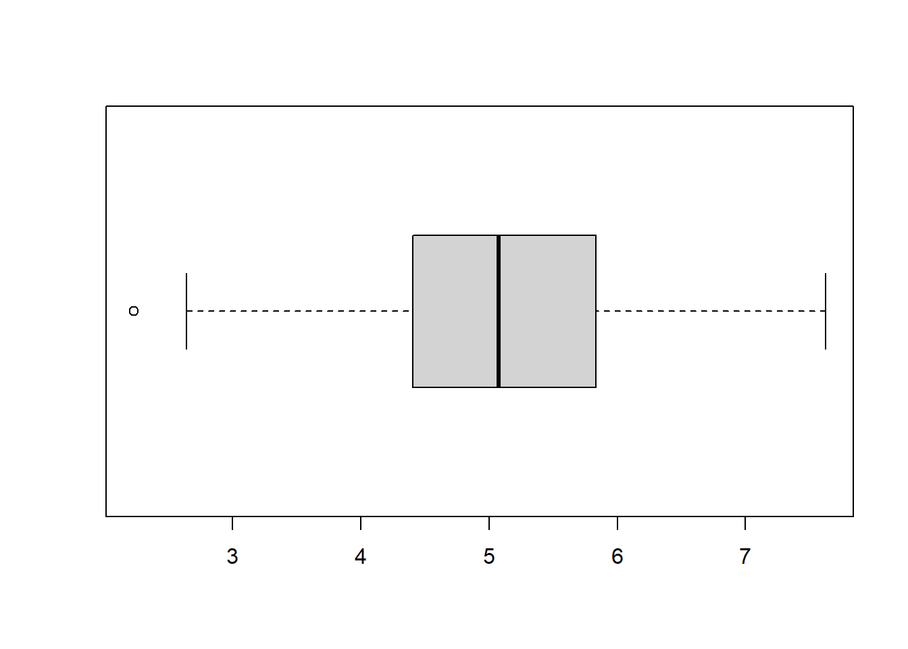
- Tukey’nin 5-sayı özeti ile birlikte yorumlanmalıdır:
## [1] 2.228997 4.403987 5.074108 5.833998 7.624800## Min. 1st Qu. Median Mean 3rd Qu. Max.
## 2.229 4.407 5.074 5.108 5.830 7.625- Kategorik değişkene göre kutu çizimleri:
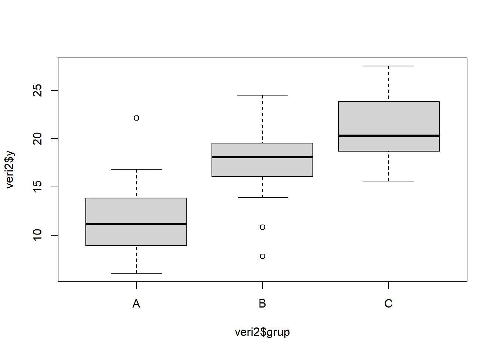
- Başka bir yol:
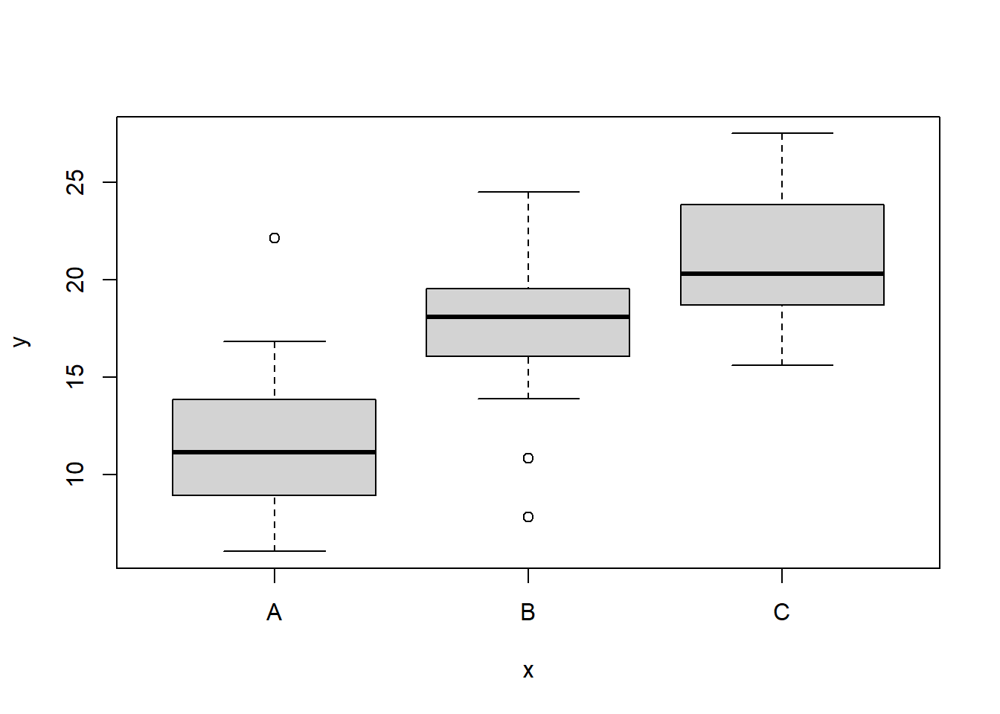
1.9.5 Örneklem birikimli yoğunluk fonksiyonu
ECDF (empirical cumulative density function) belirli bir değerden daha küçük gözlemlerin oranını verir.
Bunun grafiğini çizmek için
plot(ecdf())kullanılabilir. Örneğin,
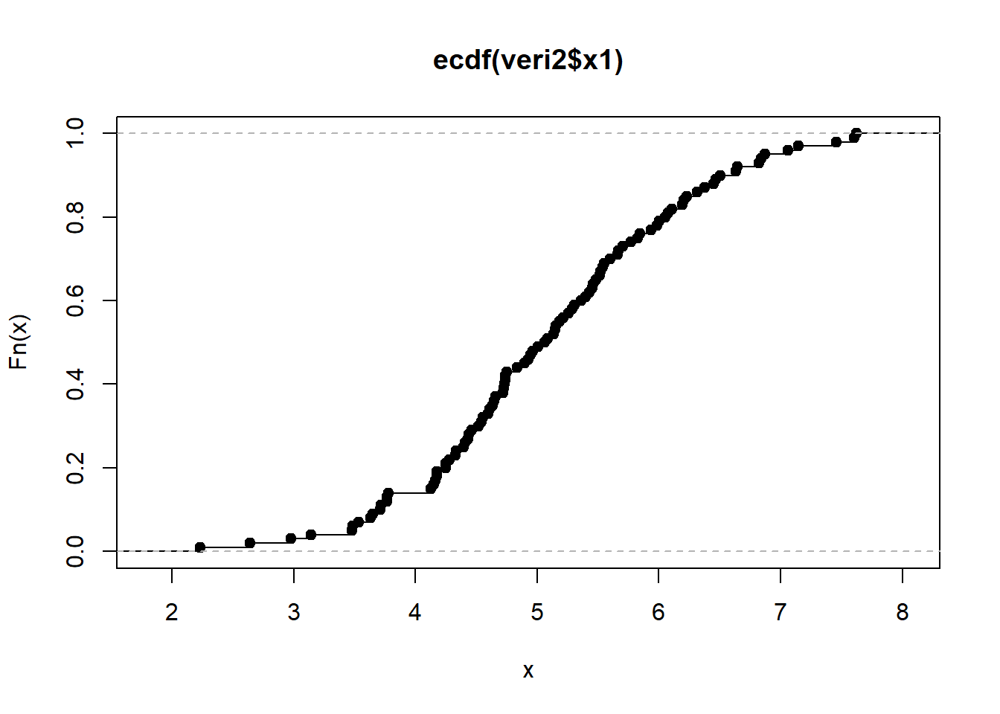
1.9.6 Serpilme çizimi
- Örnek:
plot(veri2$x2, veri2$y,
col = rgb(0,100,0,50, maxColorValue = 255), # renk kontrolü
pch = 16, # nokta şekli
main ="Serpilme çizimi", # başlık
xlab = "x1",
ylab = "y"
)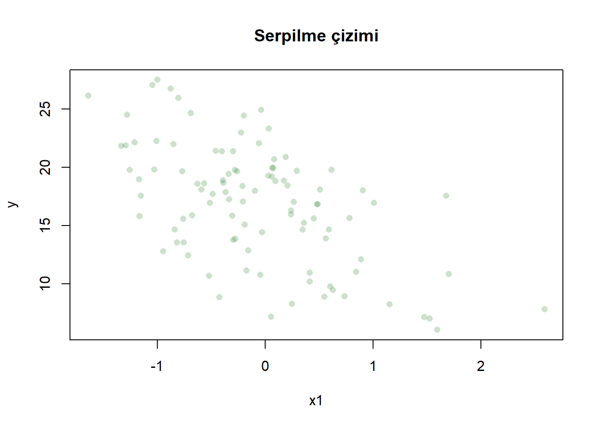
Detaylar için bkz. ?par, ?points, ?rgb.
1.9.7 Kategorik değişkenler
Kategorik değişkenlerin frekans dağılımlarının oluşturulmasında table() ve prop.table(table()) fonksiyonları kullanılabilir:
##
## A B C
## 33 35 32##
## A B C
## 0.33 0.35 0.32R’da kategorik değişkenlere verilen bir başka isim faktör değişkenleridir. Bunları aşağıdaki gibi tanımlayabiliriz:
## etiketleri oluştur
grup_etiket <- c("A", "B", "C")
# faktor değişkeni oluştur
grup_faktor <- factor(veri2$grup, labels = grup_etiket) ## grup_faktor
## A B C
## 33 35 32- Çubuk çizimi (bar plot)
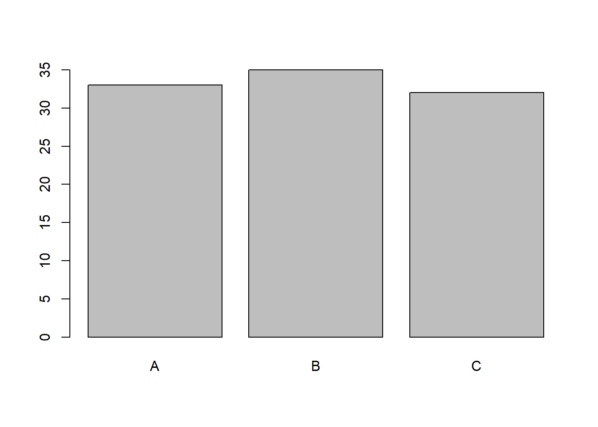
- Pasta grafiği
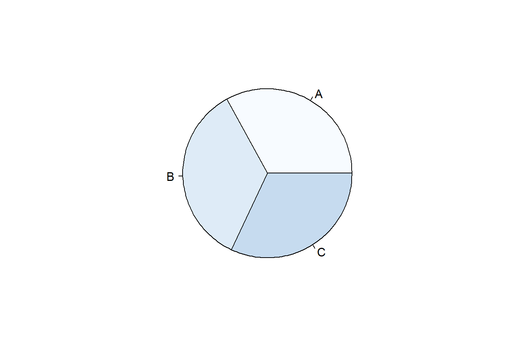